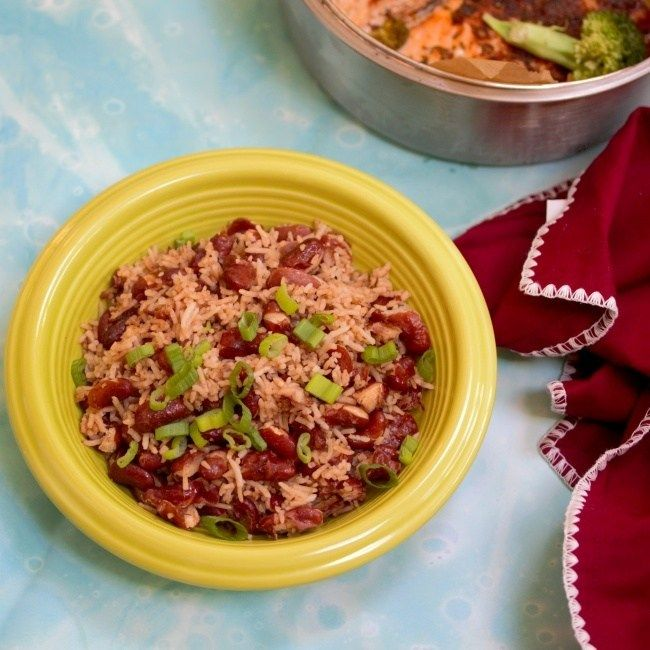

Rice

Description
This recipe is the Jamaican rice and peas.
Ingredients
- long grain rice
- kidney beans
- onions
- coconut milk (the thick kind that is used with curry)
- olive oil
Steps
- In a pot on medium heat, add olive oil
- Add cut up onions and stir until translucent
- Add kidney beans that were soaked overnight and stir
- Add coconut milk
- Add rice once milk is bubbling
- Cover pot and cook rice to desired texture